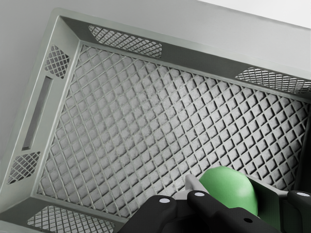
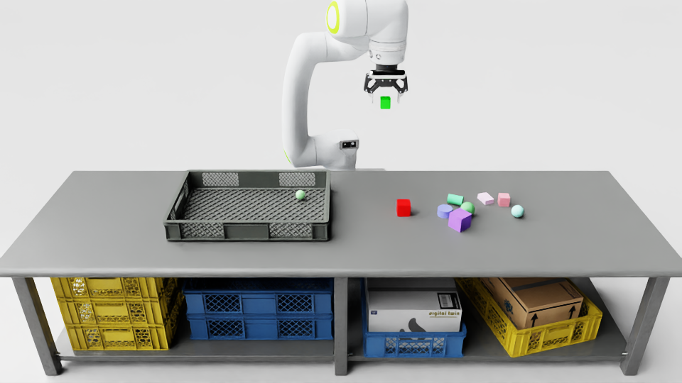
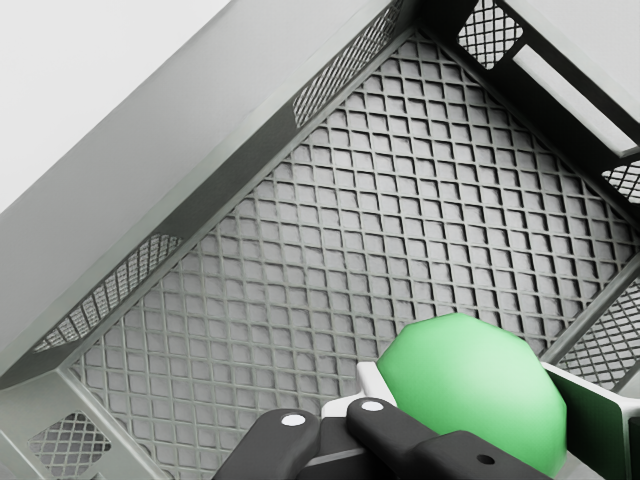
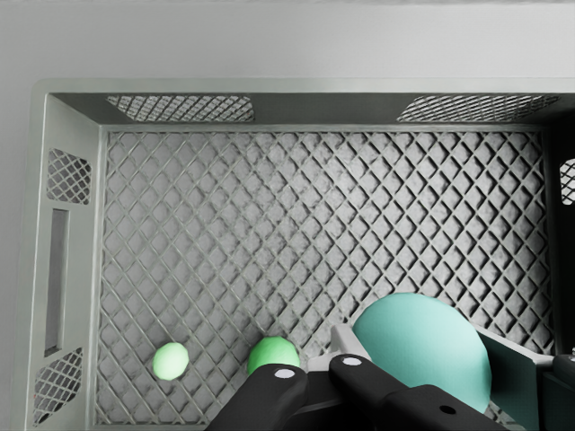

No errors: every requested object ended up in the basket and nothing else was picked.
distance from camera 0.585 m | gripper yaw 15.0° | finger stopped at 28.66° | stage object: sphere_40 (sphere) [-0.568, 0.0635, 0.6152] → [0.1682, -0.0968, 0.6237] | perception report


distance from camera 0.558 m | gripper yaw -45.0° | finger stopped at 18.39° | stage object: sphere_60 (sphere) [-0.5021, 0.0189, 0.6252] → [0.287, -0.0964, 0.6337] | perception report

distance from camera 0.588 m | gripper yaw 0.0° | finger stopped at 23.55° | stage object: sphere_50 (sphere) [-0.7002, 0.0259, 0.6202] → [0.163, -0.0013, 0.6287] | perception report

Stopped because: no sphere seen.
Stage truth is used only in this report to check the result; the robot decisions use perception only.